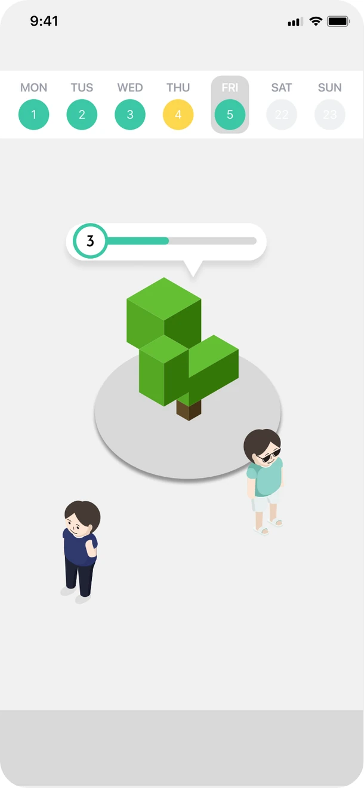

Community software · Client development
MED-MAX
A shared space for people taking long-term medication
Our Tech for Impact team, MED-MAX, built 약꾹 for people who feel isolated or lose motivation while taking long-term medication. I connected the client to the server so people could join the same room and see each other move.

Peer support and questions for pharmacists
Our team wanted patients to be able to check in with each other and ask a pharmacist questions. We designed a 2D space where patients could meet and work toward a shared goal. Patients could also send questions as letters, and pharmacists could reply when available without having to staff a live chat.
Keeping avatars in sync
I implemented sign-in, input validation, and screen transitions in the Unity client so users could enter the shared room. I used WebSocket to synchronize other users’ positions and movements, and HTTP to retrieve the user and medication information shown on screen.
Bringing the prototype together
We embedded the Unity WebGL space in a React Native WebView and used room IDs to bring users into the same space. Our team received the Tech for Impact Social Value Award. Measuring the effect on long-term medication adherence remains a next step.